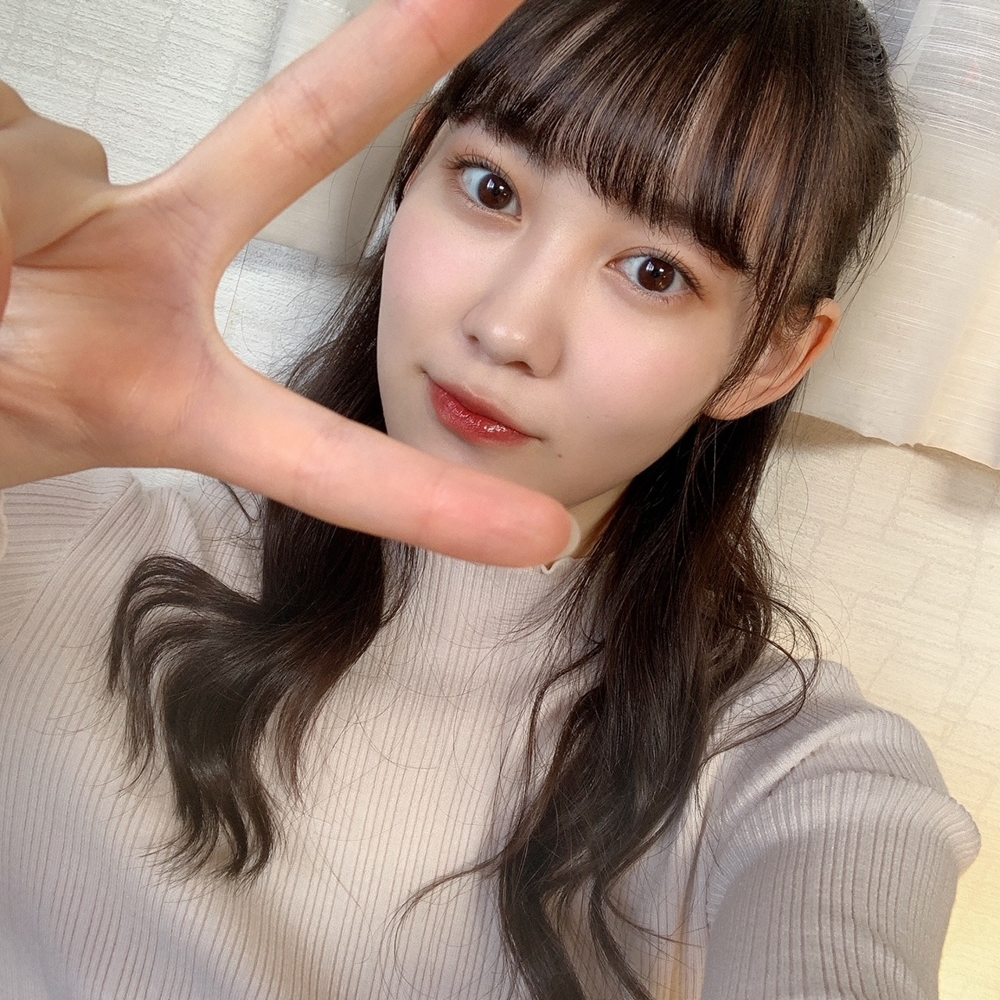

2020/1201Tue12！！ 松尾美佑
今日から12月がスタートしました！
太陽がご機嫌でルンルン気分です♪
そして12月スタートという事は同時にアドベントカレンダーもスタートしましたっ！
クリスマスまでの25日間、毎朝チョコを楽しみに寒くても早起き頑張ります☺︎
今日のチョコは甘いミルクでした
はい！
千葉県出身、高校2年生
16歳でいられるのもあと１ヶ月と2日！
松尾美佑です
まずは〜
昨日はのぎおびありがとうございました！
初めて2人でのぎおびをしました
まゆちゃんとね⸜❤︎⸝
ふふん(๑ت๑)
4期ライブに向けての発表、第一弾として！
昨日はユニットのメンバーを発表しました〜
似顔絵、似てましたかね？
レイちゃんが私が書いたレイちゃんの似顔絵を可愛いって喜んでくれていた様子です。
自信作だったので嬉しいです
今日は黒見ちゃん＆瑠奈ちゃん！
4期生ライブまでまだあと4つの発表があるので、みんなののぎおび見てくださいね¨̮
わくわくドキドキ(⸝⸝⍢⸝⸝)

はーふあっぷ
そして、
堀未央奈さんがご卒業を発表されました
新4期生が加入したばかりの時から近くに来てくださって優しさを分けてくださって、
AbemaTVさんでの白石さんクイズの時に御一緒させて頂いた時も、気さくに話しかけて下さったり笑顔を頂いて本当に嬉しかったです。
堀さんのアイドルとしての輝きも、
好きを発信出来る所も、
芯のある言葉も、
尊敬と憧れが沢山です。
堀さんのファッションもヘアアレンジもいつも大好きです！
ご卒業される日まで一緒に過ごせる時間を大切にします！！
そして！
昨日、11月30日！
伊藤純奈さん、お誕生日おめでとうございます！
純奈さんの歌声を初めて自分の耳で直接聴いた日から、純奈さんの歌声の美しさに惚れて大好きです！
純奈さんを見かける度にいつもキラキラとした笑顔をしていらっしゃって、優しい空気を纏っていて、お話出来たら嬉しいなといつも思っています！
素敵な一年になりますように願っています！

大きなぴーーーす
お返事〜
✽ 最近見た夢ってなに？
洗面所で自分で髪の毛を肩まで適当に切っちゃって
"あ...。"
"そのうち伸びるか！！！"
っていう夢を今日見て起きた時焦りました。
✽ 無事任務を終えた2020年の11月さんに一言。
ご苦労様でした、ゆっくり休んでくださいね
✽ 私もタンブリング出来るんだけど、バク転よりロンバクの方が楽な気がするの私だけ？みゆちゃんもですか？？
全力でそれなです！！！
ロンバクは勢いがあるからですかね
✽ ドラえもんの道具でなにが1番欲しいですか？
スモールライト！
自分を小さくしてドールハウスで暮らす
✽ 期末試験への意気込みを聞かせてください。
後悔しないように頑張る
って友達が言ってて良い言葉だ。って思いました。
私からは、
どーにかなる！！！！！
を差し上げます。
(まともな話をすると、テスト返しの時を想像して自分がにっこりできたらいいなと思うとがんばれます)
(あ、意気込みか)
(どーにかなる！！)
✽ 好きなおにぎりの具は何ですか？
ミュウランドの主食は
エビマヨおにぎりとたこ焼きおにぎりらしいという噂を耳にしましたよ |ᯅ̈ )
聞いてください聞いてください。
次の私のブログの日はついに4期生ライブの当日らしいですよ皆さん。
どきどきどきどきˊᵕˋ
楽しみです！
明日は〜
なお〜〜〜〜〜〜
まゆちゃんの書いたなお〜の似顔絵ほんとにそっくりだった(*¨*)♡
それでは！
4期生ライブで会いましょ〜
ミュウでした¨̮
同じ日の写真ばっかりですみません( ´∵｀)
ばいっっっっっっっ( Ꙭ )/''

PROFILE
新4期生リレー
202104
| SUN | MON | TUE | WED | THU | FRI | SAT |
|---|---|---|---|---|---|---|
| 1 | 2 | 3 | ||||
| 4 | 5 | 6 | 7 | 8 | 9 | 10 |
| 11 | 12 | 13 | 14 | 15 | 16 | 17 |
| 18 | 19 | 20 | 21 | 22 | 23 | 24 |
| 25 | 26 | 27 | 28 | 29 | 30 | |

コメント(192)
ブログ更新ありがとう！
今回のブログも楽しみにしてました！
いよいよ12月になったね！
もう今年も1ヶ月を切ったのか～
今月はというか今週は4期生ライブもあるし､忙しい中にも楽しみがあるから今月もお互い頑張ろう！
のぎおびお疲れ様でした！
猫舌SHOWROOMに続き､リアルタイムで見れたよ！
最近は配信でミュウちゃんをよく見れるから嬉しい！
4期生ライブについての発表もあったりで徐々に近づいてるライブがより楽しみになってきてます！
そう言えば､次のシングルのミーグリの開催が発表されたね！
こっちも楽しみにしてるね！
次のブログ更新がライブ当日ということで､4期生ライブ皆で楽しんでね！
自分も配信で画面越しだけど､ミュウちゃんのパフォーマンスをしっかり目に焼き付けるよ！
それじゃまた！
いよいよ4期生ライブだね、楽しみにしてます^_^
決して無理はせずに自分のペースで頑張ってください（＾ν＾）
今日はかなりの遅コメです。
アドベントカレンダー、毎日順調にめくれてますか？（三日坊主になっていませんか？）
今日はどんなチョコが出てきましたか？
美味しいのは分かるけど食べ好きには注意ですよ！
今日ののぎおびは悠理ちゃんと璃果ちゃんが担当してくれました。
二人のほんわかした雰囲気に溢れた、幸せ感いっぱいの配信だったです。
その中で、4期生ライブに向けた第３弾の発表がありましたね！
今日はライブグッズが発表されました。
パーカー、Tシャツ、タオル、
コースター、缶バッジ、ポスターと盛りだくさん！
公式サイトで探してみたけど、どこに掲載されているなか、見つけることができませんでした。
Tシャツとタオルがほしいので、また探してみます。
のぎおび選手権が進んでいますが、まゆみゆコンビの「２分」が今のところ最下位ですよ！
明日のさくちゃんと美緒ちゃんコンビがラストなので、リーチがかかっている状況です。
どんな「のぎ罰」が、いつ行われるのか、ハラハラドキドキ、楽しみです！
それではまたコメントするね。
ミュウちゃんにとって明日がいい日になりますように！ (^.^)/~~~
中学生の女子です！
初めてコメント書かせてもらいます！♡
昨日ののぎおび見ました！
まゆたんとみゆちゃん、2人とも最近気になっていたので、すごい嬉しかったし、楽しかったです！
みゆちゃんの絵、うまかったよ〜！
4期生ライブ、頑張ってね！！
未央奈ちゃんの卒業、寂しいね…
残された時間を全力で楽しんでください！
新4期のみんなはメンバーのお誕生日をブログの中でお祝いしてくれて、いつも私まで心があったかくなってます♡
オッハーーー！
今日は少し寒くないよー
天気は良さそうだよー
4期生ライブまで３日だよー
大変だけどあと少し！
テンション上げて頑張るぞーー！！
中学生の女子です！
初めてコメント書かせてもらいます！♡
昨日ののぎおび見ました！
まゆたんとみゆちゃん、2人とも最近気になっていたので、すごい嬉しかったし、楽しかったです！
みゆちゃんの絵、うまかったよ〜！
4期生ライブ、頑張ってね！！
未央奈ちゃんの卒業、寂しいね…
残された時間を全力で楽しんでください！
新4期のみんなはメンバーのお誕生日をブログの中でお祝いしてくれて、いつも私まで心があったかくなってます♡
4期生ライブ応募したよ！！
もうすぐだね、、次の美佑ちゃんの次のブログ更新美が当日なんて
この前のまゆたんとののぎおびとか、くろみちゃんとの猫舌もめっちゃ可愛かった！！
ユニット曲も楽しみだな、、
「命は美しい」ひろうするのかな、、、
いろいろたのしみです～
また書きます。
ミュウちゃんお疲れ様です！
のぎおびもちろん観ましたヨ♪
まゆたむとのペア良かったです♪
二人とも声が可愛いから観ても聴いても癒されていました！
4期生ライブに関する発表第1弾のミュウちゃんの似顔絵は、なんか力が抜けるようなタッチの絵でしたが、特徴をしっかり捉えていましたヨ(^^)
第2第3弾と発表されて期待が高まっていきますネ！
のぎばつもどうなるのか？楽しみです！
みおなちゃんの卒業発表もありましたネ。
いつかくるとわかっていても、いざその時がくると…
運命とはどうしてこんなにも切なくできているんだろうと思います。
人が幸せになりたいと前に進もうとする時、どうして誰かが悲しまなければならないんだろう、と。
でも、さらに高い夢に向かって旅立とうとしているのだから、僕たちはいつだって応援してあげるべきなんですよネ！
みおなちゃんが優しいのは、同じ道を辿ってきたから。
ただ立ち止まって待つことは優しさなんかじゃない。進んで背中を見せるしかないことをみおなちゃんは分かっているのかもしれない。
その背中から受け取った確かなもの。想いや魂を繋いでいくんです！
時間には限りがあります。有効に使うか、無駄にするかは、使い方次第です。だから後悔しないようにちゃんとできるときにやらなきゃダメですからネ！
言われなくても分かってるか(^^)
いつもたくさんのコメントに、質問に答えてくれてありがとうございます♪
12月に入り、本格的な冬の始まりを感じます。
僕の住むところでは、雪も道路を白く染める程度ですけど積もりました！
ミュウちゃんは雪にまつわる何か思い出ってありますか？
いつも纏まりのない読みにくいコメントで申し訳ないです…
いつも応援してます！
中学生の女子です！
初めてコメント書かせてもらいます！♡
昨日ののぎおび見ました！
まゆたんとみゆちゃん、2人とも最近気になっていたので、すごい嬉しかったし、楽しかったです！
みゆちゃんの絵、うまかったよ〜！
4期生ライブ、頑張ってね！！
未央奈ちゃんの卒業、寂しいね…
残された時間を全力で楽しんでください！
新4期のみんなはメンバーのお誕生日をブログの中でお祝いしてくれて、いつも私まで心があったかくなってます♡
みゆちゃんはテレビなどでタンブリングを披露するとき、よくロンバクをしているイメージなのですが、今まで挑戦した技のなかで一番難しかったものはなんですか？
ちなみに私は体操をやっていて、前方の3回ひねりが一番難しかったです。ただできるようになったときはめちゃくちゃ嬉しかったなー
良ければ教えて下さいー
猫舌やノギザカスキッツをみてここまできてしまいました
推し増ししそうな勢いです
レイちゃんの似顔絵似てましたよ！
レイちゃん推しの自分が言うから間違いないです
松尾さんめちゃくちゃピース似合います！
めちゃくちゃ不思議な夢！たまにびっくりする夢あるよね
また一年後に会いましょう11月！
まず初めに松尾さんのブログ初めから見ていきたいと思います
よろしくお願い致します
みゆちゃんの笑顔が一番にすき！
ミュウちゃん
『業務報告』
ミューグリ(ミートアンドグリート)
申し込み完了しました
では
今日はやや遅コメです。
4期生ライブまで、あと３日ですね！
練習にリハ、大変だろうけど頑張ってね。
画面越しだけど、最高の時間を共有できることが嬉しいです！
いっぱい応援するからね！！！
今日ののぎおびで、えくぼコンビが第４弾の発表をしてくれました。
アフター配信リクエスト曲発表ということで、メンバーから挙がったリクエスト10曲！
その中には、ミュウちゃんの好きな『裸足でSummer』もありましたよ！
ミュウちゃんがリクエストしたのかな？
パジャマパーティーバージョンでの『裸サマ』、見てみたいです。
どの２曲が披露されるのか、楽しみです。
そして、のぎおび選手権、まゆみゆコンビの最下位決定おめでとう！
罰ゲームがあるのはかわいそうだけど、やるからには何でも１番はいいこと！
不味いけど喉には良い「プロポリス」を飲んで、ライブ頑張ってくださいね！
そしてそして、明日ののぎおび、配信メンバーが発表されませんでした。
えくぼコンビは「お楽しみに！」って言ってたので、明日は4期生16人全員が出演してくれると勝手に信じています。
少なくとも罰ゲームのある、まゆみゆコンビは必ず出演してくれるはず！
楽しみに待ってます！
それではまたコメントするね。
ミュウちゃんにとって明日がいい日になりますように！ (^.^)/~~~
オッハーーー！
今朝はめちゃ寒いよー
指先が痛いくらいだよー
今日ものぎおび、出てくれるの？
そうだったらラッキー！
罰ゲーム、頑張ってー！
テンション上げて頑張るぞーー！！
初めてのコメントなので失礼なところがあったらごめんなさい...
美佑ちゃんは毎日どんなスキンケアをしていますか？肌が凄く綺麗だなぁと思っているので教えていただけると嬉しいです！
過去に答えている質問だったらごめんなさい。
配信ライブ、お話会楽しみにしています！
寒いので体調管理には気をつけてください〜！！
今日は初めてみゆちゃんのミーグリが当たったよ〜！
とりあえず15枚当たったよ！
みゆちゃんと話せることが決まっただけで来年だけど楽しみだなぁ。
４期生ライブはいろいろやることが発表されてるみたいだね。みゆちゃんののぎおびしか見てないから、情報が分からないや。しかも、月曜のは仕事で見逃しちゃって。
もう明後日だね。明日いろいろと調べてみようかな。
ライブ始まったら、みゆちゃんはキラキラしてるもんね。
楽しみにしてるね！
今日は初めてみゆちゃんのミーグリが当たったよ〜！
とりあえず15枚当たったよ！
みゆちゃんと話せることが決まっただけで来年だけど楽しみだなぁ。
４期生ライブはいろいろやることが発表されてるみたいだね。みゆちゃんののぎおびしか見てないから、情報が分からないや。しかも、月曜のは仕事で見逃しちゃって。
もう明後日だね。明日いろいろと調べてみようかな。
ライブ始まったら、みゆちゃんはキラキラしてるもんね。
楽しみにしてるね！
今日は何コメかな？
4期生ライブまであと２日！
今日、LINE LIVEでチケット購入しましたよ！
楽しむ準備はこれで完了です。
今日ののぎおび見ましたよ！
かっきー、せいら、まゆちゃん＆ミュウちゃん
ミュウちゃんは罰ゲームのためだけの出演だったけど、ミュウちゃんの姿が今週２回も見れて幸せです。
プロポリスの味はどうでしたか？
飲んだ途端、飛び跳ねて、咳き込むミュウちゃんの姿を見たら、強烈なことは分かるけど、どんな味だったか、次回のブログで教えてほしいです。
発表の第５弾で、4期生の新曲披露が発表されました！
やっとミュウちゃん達新4期生の正式参加曲ができて、最高に嬉しいです。
これでこれで、名実ともに乃木坂46になりましたね！
この日が来るのを、首を長〜くして待ってましたよ！
ミュウちゃんもずっと待ってたことでしょうね！
改めて、おめでとう！
バンザイ、バンザイ、バンザイ、バンザイ！
最後に質問です。
○ラーメンは何が好きですか？
○ダジャレ、好きですか？
○嫌いな食べ物はありますか？
今回はシンプルに以上です。
それではまたコメントするね。
ミュウちゃんにとって明日がいい日になりますように！ (^.^)/~~~
オッハーーー！
今朝は寒々だよー
天気は良さそうだよー
4期生ライブはいよいよ明日！
今日一日が大事だね！
明日は応援するからね！
テンション上げて頑張るぞーー！！
のぎおびshowroom、僕は見たよ。ミュウちゃんも出演していましたね。
ミュウちゃん、めっちゃかわいかったです。
罰ゲームの、プロポリスお疲れ様でした。とても苦そうなのが、伝わってきましたよ。
４期生ライブ、僕は見れませんが、応援しています。ミュウちゃん、楽しんでね。
ミュウちゃん、体調に気をつけてね。
またコメントするね。
いいね！。みゆスマイル！。
松尾美佑 様
∠※ﾟ*「乃木坂46 4期生ライブ2020」
みゆスマイル、うさこあらさん、4期生さん、関係スタッフさま、こんにちは
意気込みメッセージから、熱量増加に加速を感じております
趣向を凝らした楽曲披露を存分に楽しまれながら、ファンを先導くださいね！
24個の窓＆睡眠アプリ効果に喜び勇んで起床から、ブログ更新ありがとう
載せてくださるお写真は、どんなショットも嬉しいですヨ
まゆみゆ♥のぎおび月曜日、罰ゲームも、お疲れさまでした
絵は特徴を掴まれており、ニョロニョロさん風な仕上げが可愛かった♫
26thシングル発売記念「オンラインミート＆グリート（個別トーク会）」当選⤴
あのう、なにを話せばいいのかしら♪
初対面ですので、ご挨拶してもよろしいですか？
それでは
One more day! わくわくドキドキが共有できているみたい٩(´꒳`)۶
アフタートークは、私もパジャマに着替えて観ています
ステージからの笑顔とぴーす、カメラの向こう側から愛してるーッ♡
ライブがんばってー
今日はやや早コメです。
4期生ライブ、いよいよ明日ですね！！！
コメント書いてるうちに「今日」になってしまいそうです。
今の心境はどうですか？
ワクワク、ドキドキ
それとも
ドキドキ、ソワソワ
きっといろんな感情が波のようにやって来ているのではないですか？
でも大丈夫ですよ！
ミュウちゃんはこれまで沢山練習してきたはず！
あとは自分を信じてやるだけ！
困った時は15人の仲間が助けてくれるからね！
それにプロポリスも飲んだもんね！
16人になった4期生のパホーマンス、レイちゃんと黒見ちゃんとの３人ユニット、そして4期生の新曲披露、どれもみんなめっちゃ楽しみです！
画面越しに全力で声援を送り続けるので、ミュウちゃん頑張ってねー！！！
それではまたコメントするね。
ミュウちゃんにとって明日がいい日になりますように！ (^.^)/~~~
プロポリス飲んで喉は絶好調ですか？(笑)
ミュウちゃんのライブパフォーマンス期待しています
ミーグリで話せることたのしみにしてます！
応援してます！！！！！
ミーグリで話せることたのしみにしてます！
応援してます！！！！！
12月ですね。早いもんで今年もあと1か月ですね
あっという間だったなー
ということで、こんばんは
ブログ更新ありがとうございます☺︎
まずは、ライブ頑張ってください！
応援してます！めちゃくちゃ応援してます！
パワー送りますね！ぱわーーーーーーー！
伝わったかな？
美佑スマイルたくさん届けて見てる人みんなを虜にしちゃいましょう！
ファイトです！
あと、お話し会の券とりました！
よろしくお願いします！
とてもとてもとてもとても楽しみです。
何を話すか今のうちから考えておきますね（笑）
それと、生誕祭グッズ頼みました！
服のデザインとても平和な雰囲気で良きでした。
一つ質問があるので最後の質問コーナー(?)で質問します。
ハーフアップの美佑ちゃん
とても大人っぽくて素敵です。
ライブではどんな髪型をするのかとても楽しみです。
予想はポニーテール！当ってますように！
それでは！
今日はこの辺で！
たつやでした٩( ᐛ )و
質問
・美佑ちゃんの生誕祭Tシャツの裏に描かれてるキャラクター達は何者ですか？
・生誕祭Tシャツのデザインの意味とかあったら教えて欲しいです！
・冬の飲み物といえばホットココアですよね？
・12月の曲といえば？
・好きなお味噌汁の具は？
楽しみにしてます☺︎
ミーグリ取れたよ！
直接お話できるの凄く嬉しい☺︎
楽しみにしてるね
ミュウちゃんお疲れさまι(｀･-･´)/
部屋の片付けをしよう...明日でいいか...というような怠けた思考を繰り返すこと1週間が経ちました...
そろそろちゃんと片付けしようと思います...やっぱ明日でいいか。笑笑
おはようございます。
ついにライブの日を迎えましたね...
事前に発表されたユニットや盛り沢山なアフターとか、本編だけじゃなく色々と楽しみなことばかりでここ2週間くらいずっとわくわくソワソワしてました！笑
今日のライブを全力で楽しむ準備はできてます！
みゆスマイルで頑張ってください！
サイリウム両手に応援してますね( ･ᴗ･ )⚐⚑
それでは、また(~ ˙-˙ )~
Perfect / OneDirection
オッハーーー！
今日はビッグイベントがあるよー
何でしょうーか？
それは4期生ライブ！
パチパチパチパチ…
ミュウちゃん、頑張ってねー！
全力で応援するぞー！
テンション上げて頑張るぞーー！！
コメントする